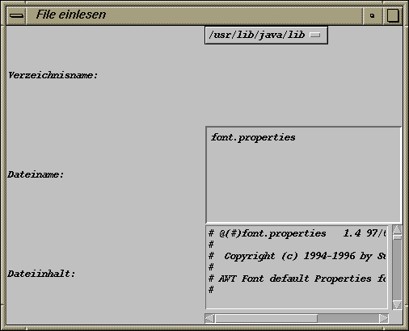

Das Übungsblatt besteht aus der Aufgabe 29, der Teamaufgabe 30 und der freiwillige Aufgabe 31 mit jeweils 4 Punkten.
Schreiben Sie eine Java-Applikation, die eine Datei aus einem bestimmten Verzeichnis einladen und anzeigen soll. Das Layout der Applikation soll in etwa dem im folgenden Bild gleichen:
Zur Auswahl des Verzeichnisnamens soll ein Auswahlelement von Java dienen, das z.B. unter Windows die Verzeichnisse
c:\windows
d:\work
k:\
anbietet bzw. unter Unix die Verzeichnisse
/usr/lib/java/lib
/home/oop03
/home/oop03/java
Der Dateiname soll in einem unveränderbaren TextField-Objekt
angezeigt werden, der Inhalt der Datei in einem unveränderbaren
TextArea-Objekt.
Vorgehen:
Nach erfolgreicher Auswahl eines Verzeichnisnamens soll ein sogenannter
File-Dialog zur Auswahl eines Files in dem gewünschten Verzeichnis
aufgehen. Hier bietet Java die Klasse FileDialog an, deren Objekte
eigenständige Fenster zur Auswahl von Filenamen sind. Bei dem
Konstruktor muss das Frame-Objekt mit angegeben werden, von dem
aus sich der File-Dialog öffnen soll. Das gewünschte Verzeichnis
muss dem FileDialog-Objekt durch die Methode setDirectory()
mitgeteilt werden. Damit die Benutzerin/der Benutzer gezwungen ist, zuerst den
File-Dialog zu beenden, bevor sie/er zurück zum Applikations-Frame
kommt, sollte der File-Dialog mit setModal(true) auf modalen Dialog
eingestellt werden. Danach kann der File-Dialog mit show() angezeigt
werden. Durch erfolgreiche Dateiauswahl bzw. durch Abbrechen wird das Fenster
des File-Dialogs automatisch wieder beendet.
helfende Fragen:
Wie kann man mit dem File-Dialog feststellen, welches Verzeichnis und welche Datei ausgewählt wurde? Wie stellt man fest, ob der Dialog abgebrochen wurde?
Können Sie auf Ihrem verwendeten Betriebssystem/Ihrer JVM einen Unterschied zwischen dem File-Dialog zum Laden und zum Speichern feststellen?
Verwenden Sie zum Einlesen und Anzeigen der Datei wieder die Vorgabe, die Sie ggf. noch geeignet modifizieren müssen, wenn Sie Ihr TextArea-Objekt nicht ta_inhalt nennen.
Abzugeben sind der Java-Sourcecode und der Java-Bytecode der Applikation.
Schreiben Sie ein Java-Applet, das ein bestimmtes Bild, z.B. den Linux-Pinguin, in einem scrollbaren Bereich anzeigt und in einer Statuszeile angibt, ob das Bildladen gestartet bzw. erfolgreich beendet wurde.
Vorgehen:
Speichern Sie das Bild in ein Objekt der Klasse java.awt.Image, das
Sie mit einem Media-Tracker (Klasse java.awt.MediaTracker) einladen.
Vergleichen Sie dazu die Vorgabe
von Blatt 10,
Aufgabe 25.
Da Image-Objekte keine GUI-Komponenten sind, müssen Sie in einem
Canvas-Objekt angezeigt werden. Entwerfen Sie, vergleichbar zur Vorlesung
vom 08.02.2000, eine eigene Klasse BildCanvas, die Sie von
Canvas ableiten. Das eingeladene Bild wird in dem Objekt der
Klasse BildCanvas mit dessen paint()-Methode
und drawImage() (als zugehöriges ImageObserver-Objekt
wählen Sie das aktuelle Canvas-Objekt)
angezeigt. Wählen Sie als gewünschte Größe des
Canvas-Objekts einfach die Bildgröße.
Wählen Sie für den Scrollbereich ein Objekt der Klasse ScrollPane, dem Sie das Objekt Ihrer Klasse BildCanvas hinzufügen. Die Größe des Appletbereichs sollte dabei kleiner sein als die Bildgröße, damit nicht gleich das komplette Bild im ScrollPane-Objekt erscheint.
Damit Sie in der Statuszeile die momentane Bildposition angeben können, zu der Sie sich mit dem horizontalem bzw. vertikalem Scrollbar bewegt haben, müssen Sie vom ScrollPane-Objekt die beiden Scrollbars ermitteln (z.B. als Referenzen auf das Interface Adjustable). Registrieren Sie für beide Scrollbars den passenden Listener und ändern Sie bei Scroll-Events die Statuszeile so ab, dass man die momentane Bildposition (mit der Methode getValue() des Interfaces Adjustable) und die Art der Scroll-Bewegung in der Statuszeile erkennen kann.
helfende Fragen:
Welcher Listener passt zum Scroll-Event? Welche Methoden müssen implementiert werden?
Wie kann man in dem Event-Handler feststellen, wer der Verursacher des Scroll-Events war und welche Art der Scroll-Bewegung (blockweise, einzeln, gezogen) vorlag?
Achtung:
Versuchen Sie nicht, Eigenschaften der Adjustable-Referenzen auf die
beiden Scrollbars zu verstellen. Dies ist bei ScrollPane-Objekten nicht
erlaubt.
Abzugeben sind der Java-Sourcecode und der Java-Bytecode des Applets sowie das zugehörige HTML-File (ggf. auch das verwendete Bild).
Versuchen Sie, in Aufgabe 30 ohne ein ScrollPane-Objekt zurechtzukommen und legen Sie stattdessen zwei ScrollBar-Objekte an. Sie müssen dann aber die Verschiebung des Bildes in dem Canvas-Objekt selbst realisieren. Dazu kann man z.B. die Methode translate() für das Graphics-Objekt des Canvas-Objekts nutzen.
Verstellen Sie die Scrollbar-Eigenschaften so, dass beim Drücken der Pfeile
der Scrollbars das Bild um 2 Pixel verschoben wird und bei blockweisem Verschieben
das Bild um 20 Pixel weiterrückt.
Nach dieser Aufgabe werden Sie den Komfort der Klasse ScrollPane
noch mehr zu schätzen wissen.
Abzugeben sind der Java-Sourcecode und der Java-Bytecode des Applets sowie das zugehörige HTML-File (ggf. auch das verwendete Bild).
{kind=link}